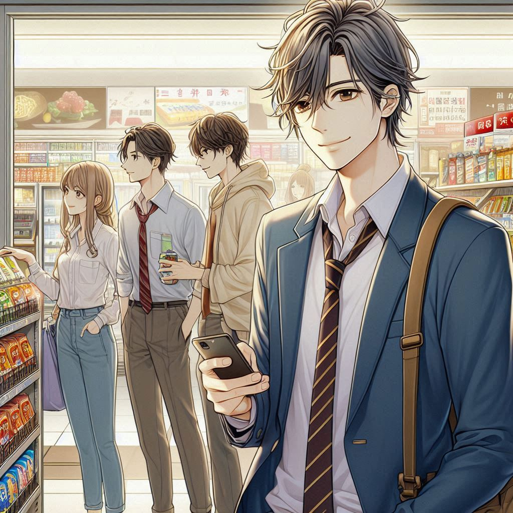

불편한 편의점
목차
작가
김호연
출판일
2021년
감상평에 대한 AI그림
일상적이면서 우리에게 익숙한 편의점을 배경으로한 소설이며 거기서 일하게된 주인공에 대한 이야기를 다룬다.
편의점에서 일하는 주인공과 그 주변 인물들과 관련된 이야기를 사실적으로 잘 표현했다.
현실적 문제들을 가지고 힘든 인생을 살고있는 사람들이 겪는 어려움을 소설로써 재미있게 만든것 같다.

감상평에 대한 AI평가
배경 설정: 편의점을 배경으로 한 일상적인 요소를 명확히 언급하여 독자가 소설의 무대와 분위기를 쉽게 상상할 수 있게 합니다.
주인공 및 인물들: 편의점에서 일하는 주인공과 주변 인물들의 이야기를 중심으로 하여, 소설의 주요 내용과 구성을 잘 전달합니다.
현실적인 문제: 현실적인 문제들을 가지고 힘든 인생을 살고 있는 사람들의 이야기를 통해 독자에게 공감과 흥미를 불러일으킵니다.
재미 요소: 어려움을 재미있게 풀어낸 점을 강조하여 소설의 매력을 잘 설명하고 있습니다.